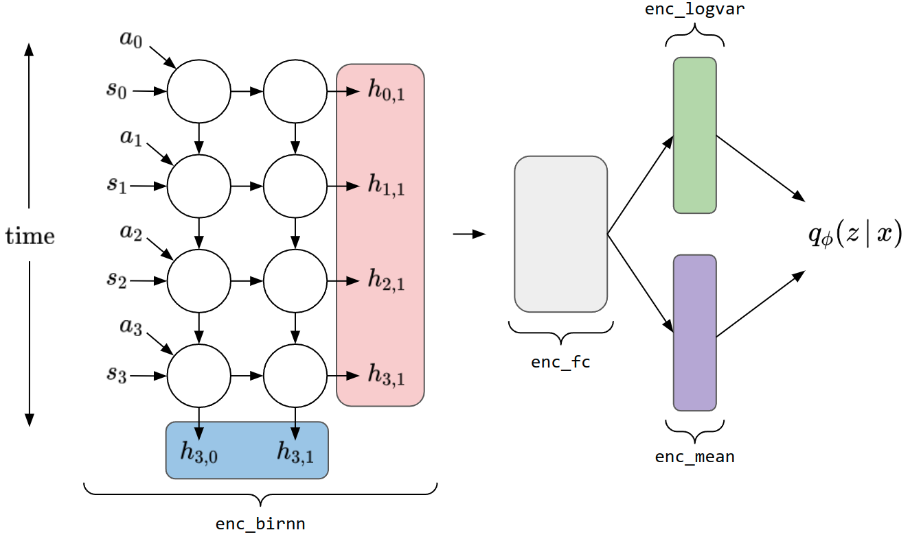

TVAE encoder explanation¶
Recurrent portion of encoder
While the model defaults to using Gated Recurrent Units (GRUs), the recurrent portion of the encoder can be described as a network of simpler recurrent units, shown in recurrent-encoder.
The recurrent portion of the encoder succesively computes and propagates hidden states denoted \(h_{t,j}\) for each time step \(t\) and each layer \(j\) of the network.
To give an example of how the model works, let \(x_t\) be the input at time \(t\) which is a concatenation of the current state \(s_t\) and the action \(a_t\), where \(a_{t}\) represents the change from \(s_t\) to \(s_{t+1}\). To compute \(h_{t,0}\) for any \(t\) using PyTorch’s basic RNN module, the following equations are used.
\[ \begin{align}\begin{aligned}g_{t} = (W_{0} x_{t} + b_{W_{0}}) + (U_{0} h_{t-1} + b_{U_{0}})\\h_{t} = \sigma(g_{t})\end{aligned}\end{align} \]\(W_{0}\) is a matrix of learned weights mapping from the input space to the hidden space of layer 0 and \(b_{W_{0}}\) is the vector of corresponding biases.
\(U_{0}\) is a matrix of weights mapping the hidden state from the previous time step to the current time step and \(b_{U_{0}}\) is the vector of corresponding biases.
There will be different weights \(W_{j}, U_{j}\) and biases \(b_{W_{j}}, b_{U_{j}}\) for each layer
\(\sigma\) is the activation function, which when using
torch.nn.RNNdefaults to hyperbolic tagent.
The recurrent portion of the TVAE’s encoder is an attribute called
enc_birnn. When callingenc_birnn(x),x should be a tensor of shape[seq_len, batch_size,state_dim*2]. The output ofself.enc_birnn(x)is a tuple of tensorsoutputs, hiddens.The
outputstensor (shown in red) will be of shape[seq_len, batch_size, rnn_dim]Indexing along the first dimension ofoutputsgives the value of \(h_{t}\) for each time step.The
hiddenstensor (shown above in blue) will be of shape[num_layers, batch_size, rnn_dim]. Indexing along thenum_layersdimension gives the computed hidden state at the final time step for each layer in the RNN.
Model variations
There are two model variations available, each differs in what output of
enc_birnnis passed to the fully connected portion of the encoder.The first variation is the default. If \(T\) and \(M\) represent the sequence length and number of layers used, respectively, this variation passes \(\frac{1}{T} \sum^{T} h_{t,M}\) to the fully connected portion of the encoder.
The second variation is used when
final_hiddenis set toTruein the configuration dictionary passed to the model. In this case, the hidden state at the final time step and final layer \(h_{T,M}\) is passed to the fully connected portion of the encoder.
Fully connected portion of encoder
The output of the recurrent portion of the encoder is passed through two fully connected layers each with dimensionality specified by the
h_dimparameter. Both use a ReLU activation function and are within an attribute calledenc_fc.The output of
enc_fcis passed through two separate layersenc_meanandenc_logvarwhich learn to infer the mean and log variance that parameterize the posterior distribution over the latent space.